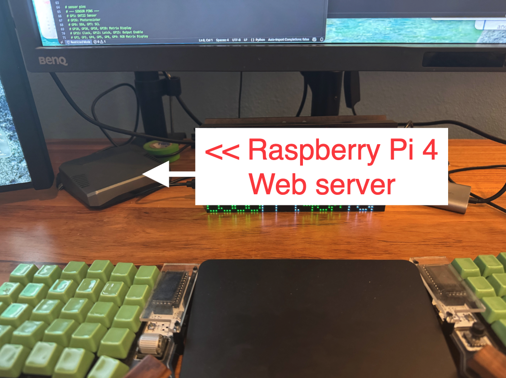
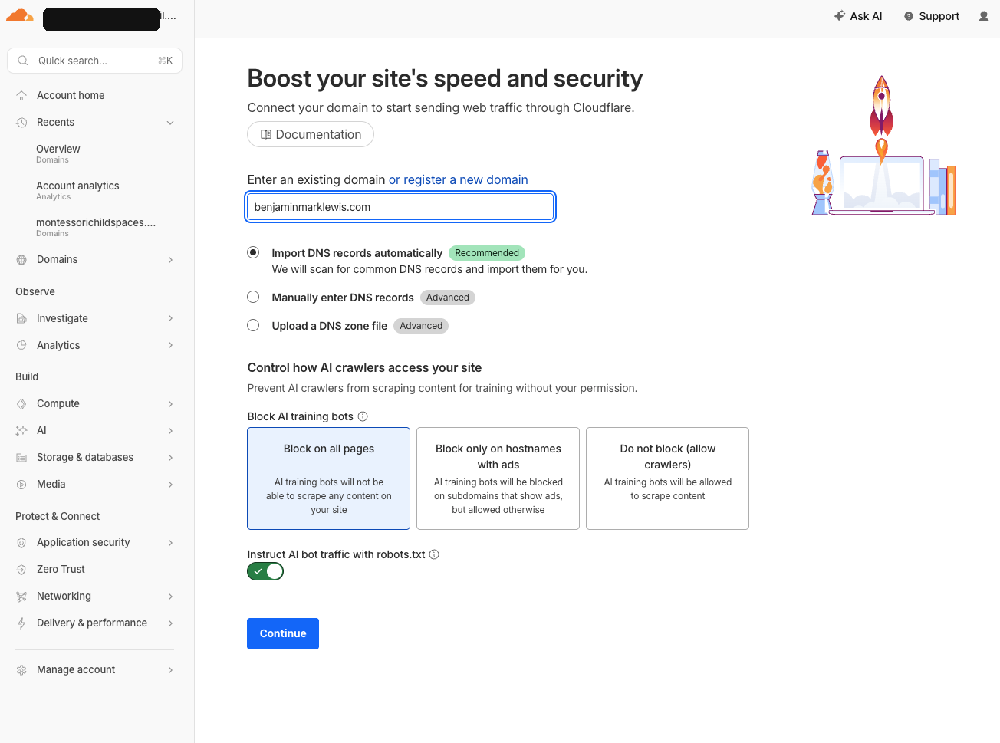
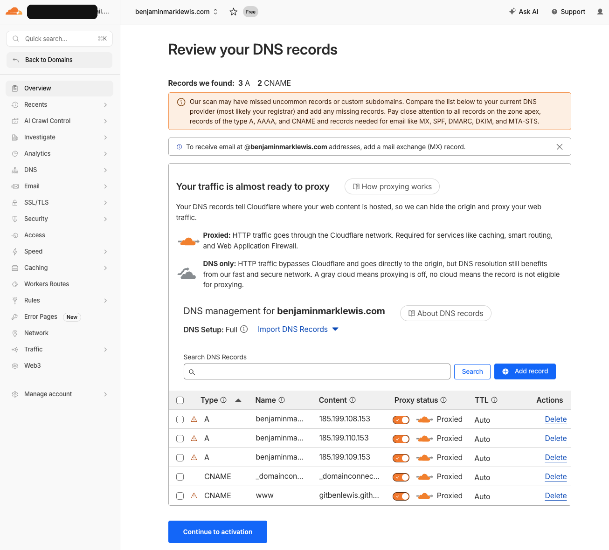
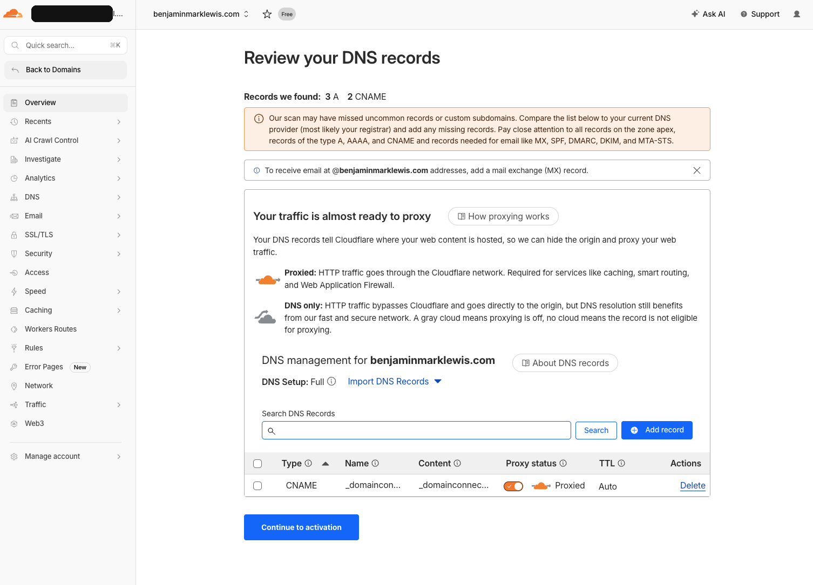
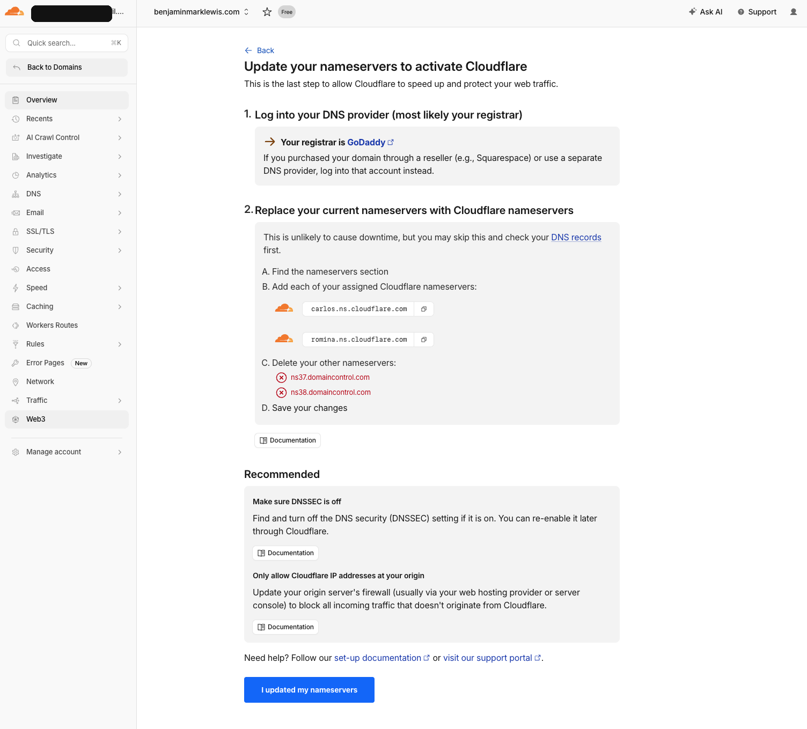
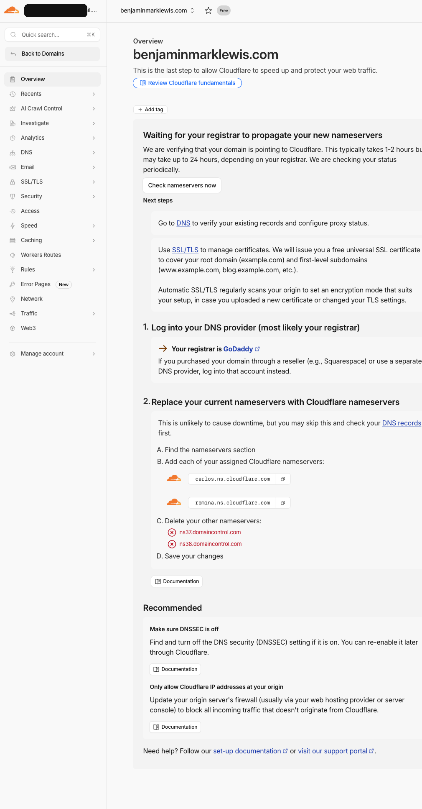
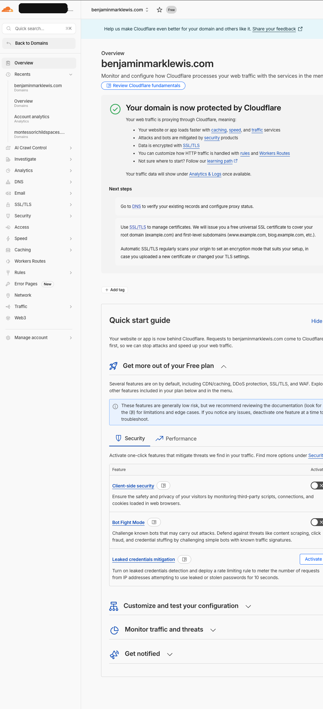

Raspberry Pi · Caddy · Cloudflare Tunnel
Deploying this website from a $100 Raspberry Pi 4
A lightweight static-site deployment for benjaminmarklewis.com: static files on a Raspberry Pi 4, Caddy as the local web server, and Cloudflare Tunnel for public HTTPS without router port forwarding.

Why this setup
I wanted a deployment setup that felt simple, inexpensive, and fully under my control. Instead of pushing the site to a typical static-hosting platform, I hosted the finished static files on a Raspberry Pi 4 in my home network, served them with Caddy, and put Cloudflare Tunnel in front so the site could be reached publicly over HTTPS without opening router ports.
The part I especially like is that the website is being hosted right now on an inexpensive Raspberry Pi 4 single-board computer that costs about $100. It also uses very little power — roughly 5 watts while hosting — so it can run continuously without feeling like a full server sitting in the house. There is something satisfying about a real public site living on a tiny machine at home and quietly doing its job.
The architecture
Visitor → Cloudflare DNS → Cloudflare Tunnel → Raspberry Pi → Caddy → Static site files- No inbound router port forwarding.
- Public HTTPS is handled through Cloudflare.
- The Pi only serves the site locally to the tunnel.
- Updates are a repeatable file sync plus verification.
Prepare the Raspberry Pi
I started by wiping and reflashing the SD card for a Raspberry Pi 4. During imaging, I configured the basics so the machine could be managed after first boot. I used Raspberry Pi OS Full 64-bit; Lite would also work, but the 8GB Pi 4 had plenty of headroom and the desktop image is convenient for local troubleshooting.
sudo apt update
sudo apt full-upgrade -y
sudo rebootInstall Caddy and create a web root
The site is static, so there is no application runtime to manage. Caddy serves the files from a dedicated web root and gives a simple local preview before any public DNS changes.
sudo mkdir -p /var/www/benjaminmarklewis
sudo chown -R $USER:www-data /var/www/benjaminmarklewis:8083 {
root * /var/www/benjaminmarklewis
file_server
}Copy the static site to the Pi
The deployment model is intentionally plain: the source files live on the development machine, and the Pi receives the ready-to-serve static files.
rsync -av --delete /path/to/site/ user@pi-host:/var/www/benjaminmarklewis/That keeps the Pi free of extra development tooling and makes deploys quick to repeat.
Verify locally first
Before touching public DNS, I checked the Pi over the LAN. This separated origin-server problems from DNS or Cloudflare problems. Once the LAN preview returned HTTP 200 and the expected page content was present, the public cutover was much less stressful.
Put Cloudflare Tunnel in front
Cloudflare Tunnel lets the Pi maintain an outbound connection to Cloudflare. Public requests come back through that connection, so the Pi does not need to be directly exposed to the internet.
ingress:
- hostname: benjaminmarklewis.com
service: http://localhost:8083
- hostname: www.benjaminmarklewis.com
service: http://localhost:8083
- service: http_status:404Move DNS from the old host to Cloudflare
Before the cutover, the live site was still served elsewhere. Cloudflare imported the existing DNS records, then I removed the web-hosting records that pointed at the old platform and switched the registrar nameservers to Cloudflare.




Verify the public cutover
After the registrar nameserver update propagated and the tunnel routes were in place, I checked both apex and www over HTTPS. The checks were simple: HTTP 200, expected page content, and traffic clearly served through the Cloudflare path.


Small problems I hit
- I briefly tried to use Linux
aptcommands on macOS while setting up Raspberry Pi Imager. That failed immediately and was a useful reminder to keep Mac-side and Pi-side setup steps separate. - The Pi already had Cloudflare credentials from an earlier tunnel setup, so I had to preserve the existing certificate before authorizing the new zone.
- DNS propagation was not synchronized across resolvers, which created a short period where different tools reported different states.
What I like about it
- The origin hosting cost is tiny because the Pi does the work.
- Power usage is tiny too — about 5 watts while serving the site.
- The deploy flow stays understandable.
- Cloudflare Tunnel avoids direct home-network exposure.
- Caddy keeps the local serving layer simple and predictable, which is exactly what I wanted.
What I would improve next
- Document the deploy command in one script.
- Add a basic rollback strategy.
- Monitor the Pi and tunnel service more explicitly.
- Keep a cleaner separation between staging and production domains.
Final takeaway
Hosting a static site on a Raspberry Pi is practical if the stack stays small. The winning combination here was not just the Pi, but the full flow around it: static files instead of a runtime-heavy app, Caddy for local serving, Cloudflare Tunnel for safe public access, and a disciplined local-first verification step before DNS changes.